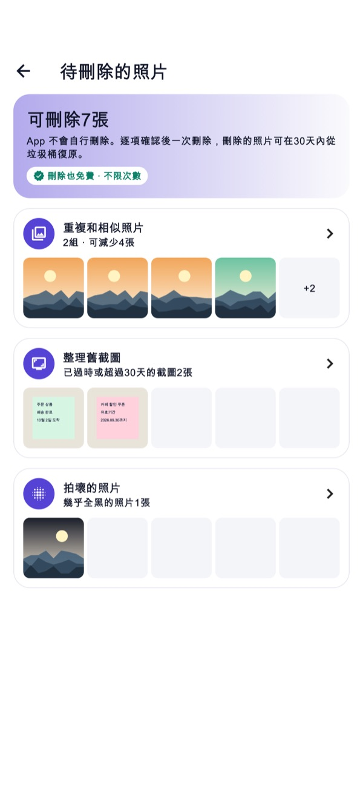

刪除重複照片的方法
1. 待刪除的照片這樣匯集
照片分頁裡的「待刪除的照片」會把需要整理的照片分成三類。
• 重複和相似照片:相同的照片或連拍的相似照片
• 舊截圖:超過30天的截圖。顯示收據、帳戶或密碼的截圖不會預先選取。
• 拍壞的照片:誤拍的幾乎全黑的照片

2. 這樣刪除
1. 每組保留最好的一張,其餘的預先選好。
2. 點照片可以放大查看,並更換要保留的照片。
3. 確認後點「刪除○張」。
3. 誤刪也沒關係
刪除的照片可在手機的「最近刪除」中保留30天並復原。無法復原的裝置會在刪除前提醒你。